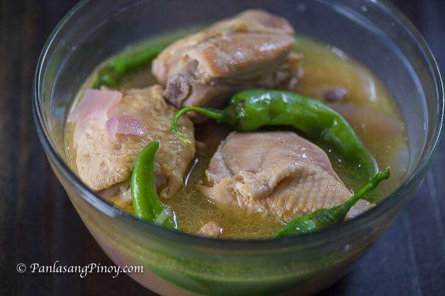

Home
Sinampalukang Manok

Final Product of Sinampalukang Manok
Sinampalukang Manok is a chicken soup dish with a sour broth. It is has similarities to Sinigang, which happens to be one of the most popular Filipino dish. I like Sinampalukang Manok because it is simple and delicious. This dish has minimal ingredients yet it is very flavorful. I prefer to have it while it's still piping hot.
Ingredients
- 2 lbs. chicken cut into serving pieces
- 3/4 cups tamarind flower buds or tamarind leaves
- 1 large red onion
- 4 pieces long green pepper siding pansigang
- 3 thumbs ginger sliced
- 4 cloves garlic crushed
- 1 20 g. Knorr Sinigang sa Sampaloc Mix, original
- 1 Knorr Chicken Cube
- 3 tablespoons fish sauce
- 6 cups water